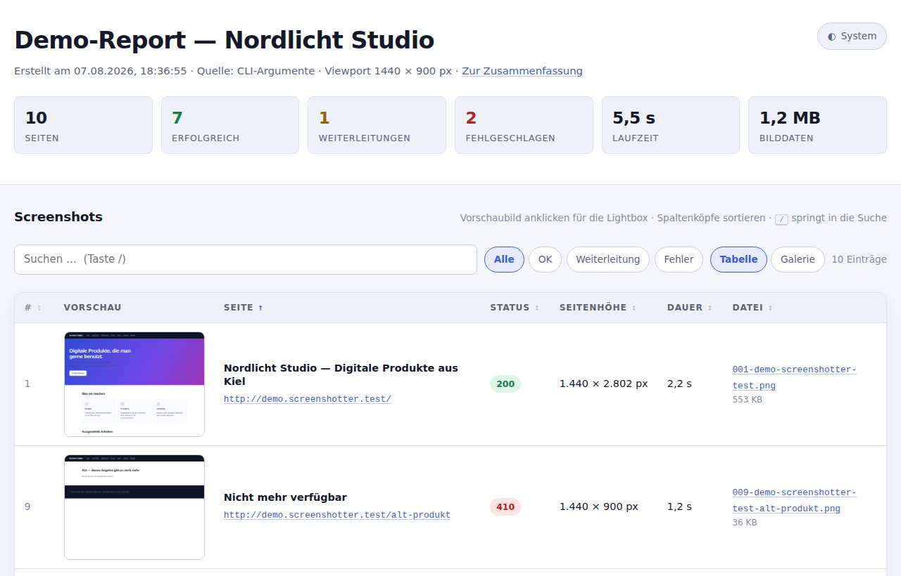
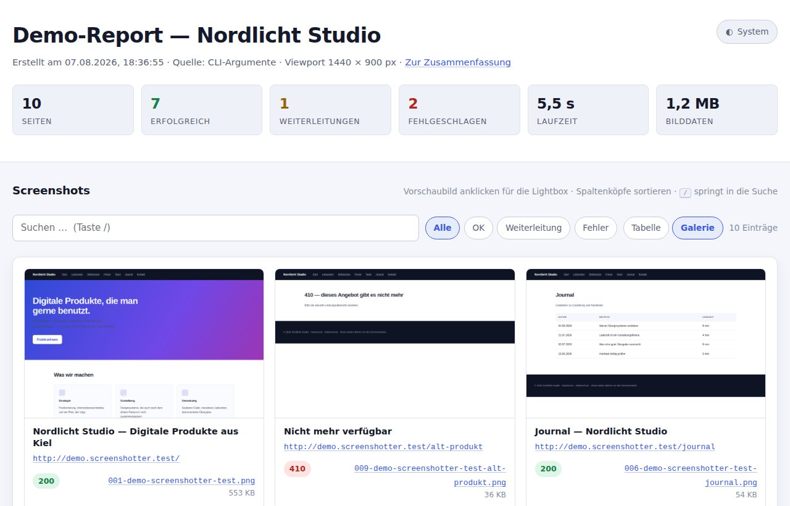
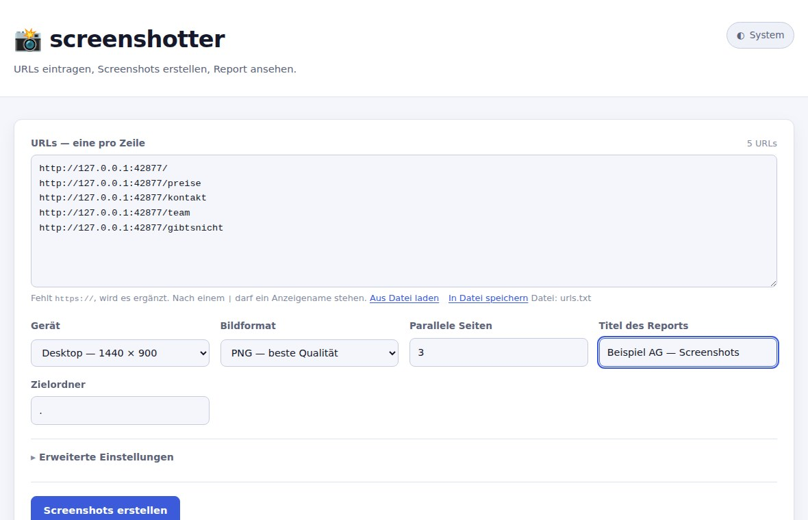
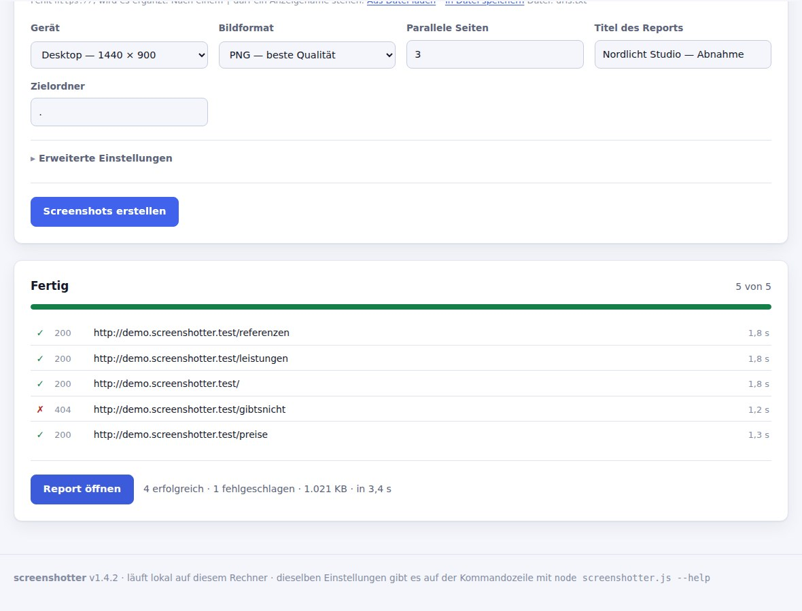

So sieht das Ergebnis aus
Der Demo-Report ist echt und vollständig bedienbar: Vorschaubilder öffnen eine Lightbox, Spaltenköpfe sortieren, die Ansicht lässt sich zwischen Tabelle und Galerie umschalten. Erzeugt wurde er aus einer erfundenen Beispiel-Website.


Ohne Kommandozeile
Ein Befehl startet eine kleine Oberfläche im Browser. Dort trägt man die URLs ein,
wählt das Gerät und sieht dem Lauf zu. Unter Windows genügt ein Doppelklick auf
screenshotter.cmd.


In 60 Sekunden
# Paket entpacken, dann:
npm install
node screenshotter.js --serve --openscreenshotter.cmd
doppelklicken. Der Starter richtet beim ersten Mal alles ein.
Vorausgesetzt wird nur Node.js
in der LTS-Version.
- URLs eintragen — eine pro Zeile, fehlendes
https://wird ergänzt. - Gerät wählen — Desktop, Laptop, Tablet oder Smartphone.
- Starten — mehrere Seiten laufen parallel, der Fortschritt ist sichtbar.
- Report ansehen — oder den Ordner auf einen Webserver kopieren.
Warum so schlank
Das Werkzeug soll in fünf Jahren noch laufen, ohne dass jemand eine Toolchain wiederbeleben muss.
-
Genau eine Abhängigkeit
Playwright für Chromium. Alles andere sind Node-Bordmittel — auch der Server der Weboberfläche.
-
Kein Build-Schritt
Der Report ist handgeschriebenes HTML, CSS und JavaScript. Kein Bundler, kein Framework.
-
Keine Datenbank
Alles liegt flach im Dateisystem. Daneben eine
report.jsonfür die Weiterverarbeitung. -
Läuft überall
Der fertige Ordner funktioniert auf Apache, nginx, GitHub Pages, S3 — oder per Doppelklick.
-
Auch ohne JavaScript
Beide Tabellen stehen vollständig im HTML. JavaScript ergänzt nur den Komfort.
-
Fehler im Klartext
Statt
ERR_NAME_NOT_RESOLVEDsteht dort, was los ist — und was dagegen hilft.
Auch für den Automatik-Betrieb
Dasselbe Werkzeug arbeitet still im Hintergrund: nächtlich per cron oder als Schritt in einer Pipeline. Der Exit-Code meldet, ob alle Seiten erreichbar waren.
node screenshotter.js --input urls.txt --out public --allow-failures